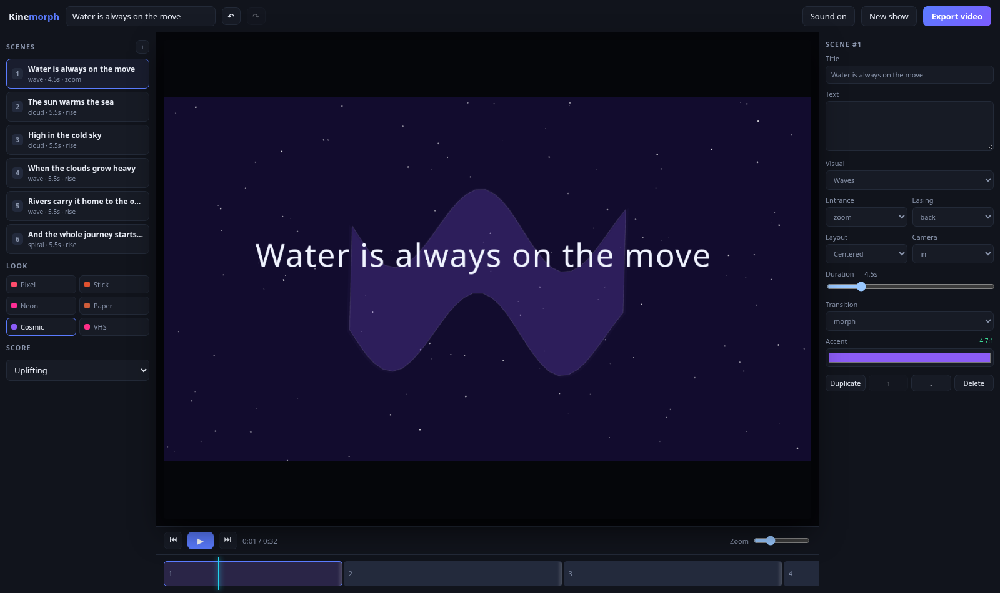
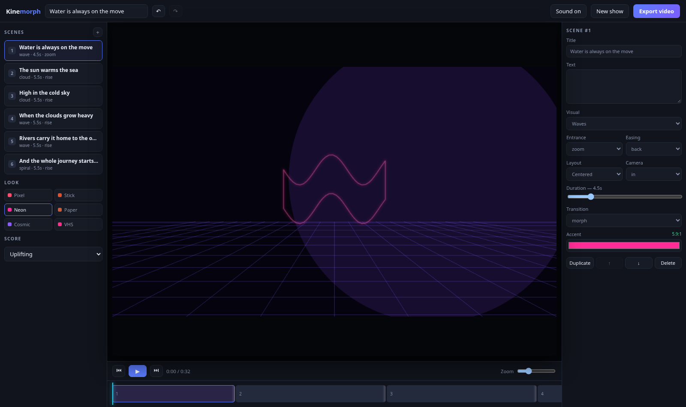
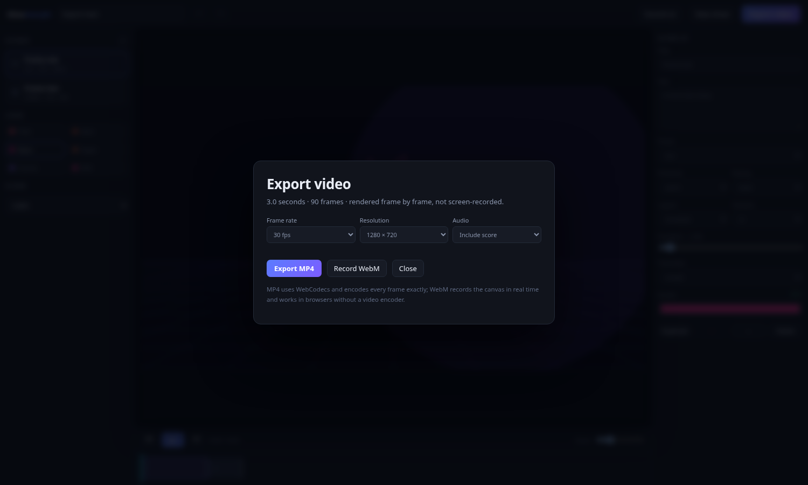

Kinemorph is the studio version: a React + TypeScript editor over a PixiJS WebGL renderer, a generative Tone.js score, and frame-exact MP4 export through WebCodecs. Same idea as Kinemotif, none of the single-file constraints.
MIT · no account · runs entirely in your browser

Five packages, one editor. The engine is headless and pure, so the preview, the scrubber and the export share a code path.
Zod-validated project model, Zustand store, serialisable commands with undo/redo, the story engine and the timeline resolver.
PixiJS compositor. Renders at each style's native resolution, so pixel styles are genuinely low-res rather than filtered.
Tone.js score generator. Notes are built as data first, then rendered twice: through Tone for playback, offline for export.
WebCodecs VideoEncoder + mp4-muxer. Deterministic frame loop, AAC/Opus audio, MediaRecorder fallback.
The React editor: scene list, inspector, zoomable timeline with drag-trim, transport, wizard and export dialog.
render(project, time) is pure. Nothing advances a clock, so frame 431 is always the same frame.
Every motif is a closed polygon resampled to 96 points, so any motif morphs into any other by interpolating points — not by cross-fading two images.
The renderer keeps its backing store at the style's native size: 480×270 for Pixel Arcade, 1920×1080 for the clean looks. That single number is why the 8-bit style actually looks 8-bit.


Export walks the timeline one frame at a time: set the clock to i / fps,
render, grab the pixels, hand them to the hardware encoder. A busy tab cannot drop a
frame because nothing is captured in real time.
The soundtrack is mixed down through an OfflineAudioContext from the same
note data the preview plays, then encoded alongside the video and muxed into the MP4.
// the whole export loop for (let i = 0; i < totalFrames; i++) { renderer.render(project, i / fps); ctx.drawImage(renderer.canvas, 0, 0, w, h); const frame = new VideoFrame(surface, { timestamp }); encoder.encode(frame, { keyFrame: i % (fps * 2) === 0 }); frame.close(); }
Software rendering is slow — a 4-second test took about 100 seconds on a CPU-only renderer. On a machine with a GPU it runs far faster. There is a real-time WebM fallback for browsers without a video encoder.
Kinemorph is the heavy sibling. Pick the one that matches the job.
PixiJS + React + TypeScript. Frame-exact MP4 export, generative score, real editor. Needs a build step and a modern browser.
One 98 KB HTML file. No dependencies, no build, no network. Opens from a USB stick and plays offline. Exports HTML shows, not video.
Need a video file for a channel or a client? Kinemorph. Need something that runs anywhere, offline, forever? Kinemotif.